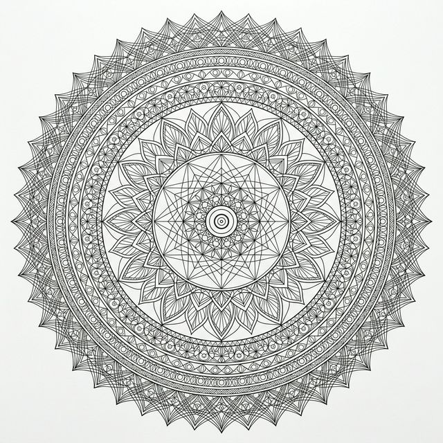

A rare, deeply therapeutic practice — now accessible from your home, guided live by certified yogic practitioners.
The practice involves drinking warm saline water in structured rounds,
These rounds are interspersed with five specific yoga asanas that move the water progressively through the entire digestive tract from stomach to colon flushing it clean.
When done correctly under guidance, it resets gut microbiome ecology,
This reduces bloating, supports hormonal balance, and leaves one feeling remarkably light.
Varisara is a powerful therapeutic practice and is not suitable for everyone. Please read this carefully before registering. A declaration form will be shared with all participants prior to the session.
No prior yoga experience is needed. The five asanas used in Varisara are simple standing and floor movements that most people can perform comfortably. Your instructor will demonstrate each movement at the start of the session and guide you through every step in real time.
Stop the practice immediately and inform the instructor. If you experience severe dizziness, vomiting, sharp abdominal pain, or extreme weakness — stop without hesitation. The instructor is trained to handle these situations, and safety protocols are in place.
Yes — please prepare the khichdi in advance. After the practice, your digestive system needs to receive warm, plain khichdi within 30–45 minutes. It should be made with rice, yellow moong dal, ghee, and a small amount of salt — no spices.
A recorded replay is available exclusively as part of the Premium Add-On package. The core ticket grants live session access only. However, given the supervised and safety-dependent nature of this practice, we strongly recommend attending live rather than attempting it alone via a recording.
Varisara is a complete, mechanically guided cleanse of the entire digestive tract — from stomach to colon. Unlike juice cleanses or supplement-based detoxes, it uses specific yogic asanas to physically move water through each section of the gut. The results are immediate and physiologically grounded.
7:30 AM EST corresponds to 5:00 PM IST (India Standard Time). The workshop falls on a Sunday, making it a comfortable evening session for Indian participants. If you're in the Middle East, it's approximately 3:30–4:30 PM depending on your country.
Spots are limited to ensure quality supervision. Register early to secure your place in this rare practice.
Reserve My Spot